Nyzo version 539 (commit on GitHub) improves management of TCP connections to better constrain memory usage.
This version affects all run modes of Nyzo.
Nyzo is a communication-heavy system. To eliminate the potential problems associated with maintaining open connections within the mesh, a new connection is established for every message. Some of these connections were not closing properly, and many more were consuming excess memory in a 60-second TIME_WAIT state due to how they were closed. Contrary to some suggestions that this TIME_WAIT state is adjustable on Linux, the 60-second wait is actually hard-coded in the Linux kernel and cannot be reduced without compiling a custom kernel.
The suggestions floating around online that actually reduce the number of connections in TIME_WAIT are effective because they modify other parameters, but the net.ipv4.tcp_fin_timeout variable does not change the TIME_WAIT timeout. The confusion is due to the way these are defined in tcp.h in the Linux source:
#define TCP_TIMEWAIT_LEN (60*HZ)
#define TCP_FIN_TIMEOUT TCP_TIMEWAIT_LEN
The default value of tcp_fin_timeout, defined here, is set to the same value as tcp_timewait_len. However, the value of tcp_fin_timeout, which is an adjustable parameter, does not propagate back to tcp_timewait_len.
So, we are left with a timeout that cannot be adjusted and an accumulation of connections that is sometimes causing performance and stability issues. While there are some system adjustments that could partially address this problem, this version addresses it directly by forcing connections to close in a way that avoids the TIME_WAIT state. The technique used here is unconventional, and it is not a good general-purpose solution to the TIME_WAIT problem, but it fits well with the design of Nyzo. Also, it drastically improves the performance and stability of Nyzo.
The new Connection class wraps a Socket and a timestamp.
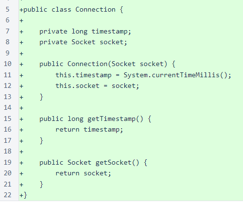ConnectionManager is a simple FIFO queue of Connection objects. It provides a process for terminating connections after a specified delay while only using a single thread and minimal computational power. The delay is necessary because the abrupt termination now used for sockets can cause information loss if it is executed too quickly after the last data is written to the socket output stream.
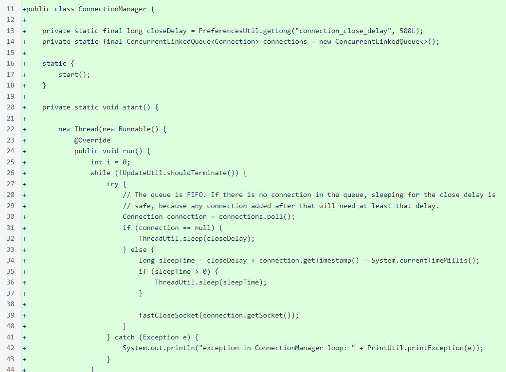The slowCloseSocket() method attempts to add a socket to the termination queue, closing the socket immediately if addition to the queue fails. In practice, the socket will almost always (or always) be added to the queue. Immediately closing a socket, with the consequent risk of loss of transmitted information, is preferable to leaking a socket or expending extra effort to close the socket more gently.
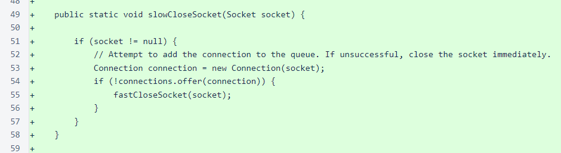The fastCloseSocket() method is the essence of this version, and it is an unconventional solution. Activating SO_LINGER with a timeout of 0 bypasses the normal TCP termination process. If you read even a little about this setting, you will find some strong opinions about it. In reality, the need to use this setting indicates that TCP is not the ideal protocol for Nyzo. In the future, Nyzo will likely be well served migrating to a UDP-based protocol that segments and reassembles messages at the application level to overcome transport-level limitations. Fundamentally, Nyzo is a message-oriented system, not a connection-oriented system.
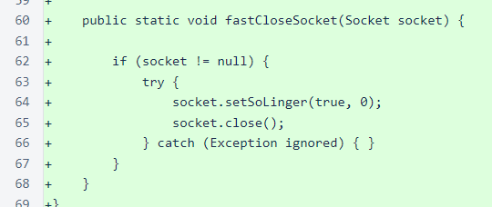In MeshListener, the close() method calls on blacklisted connections now use ConnectionManager.fastCloseSocket().
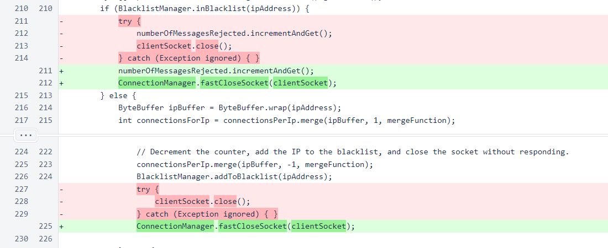A comment was added to the readMessageAndRespond() method call to make the code easier to understand.
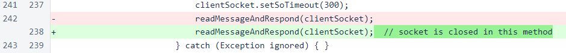In readMessageAndRespond(), the output stream is flushed after the response message is written to it. This ensures that the response message is pushed through any application-level buffering that is in place.
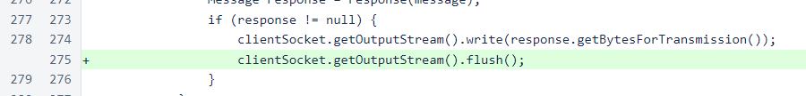At the end of the readMessageAndRespond() method, the socket is closed with the ConnectionManager.slowCloseSocket() method. This method attempts to give the connection time to transmit the response before forcing the socket to close.
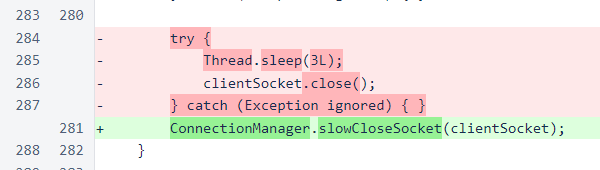The connection timeout for outgoing connections has been reduced from 3 seconds to 2 seconds. The 3-second timeout was excessively long. The socket close in case of an exception when opening the socket has been replaced with a call to ConnectionManager.fastCloseSocket().
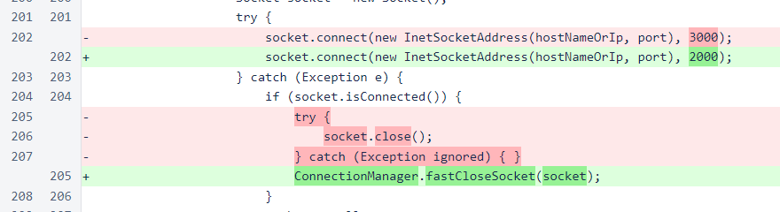A timeout of 1 second was added for reading responses to outgoing messages. Without this timeout, an attacker or a malfunctioning verifier could keep many connections open indefinitely, consuming resources on this system.
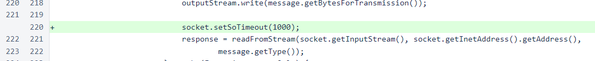The implementation of ThreadUtil.sleep() has been modified to handle negative inputs more reasonably. This does not significantly change the behavior of the code, but it is more sensible than the previous implementation.
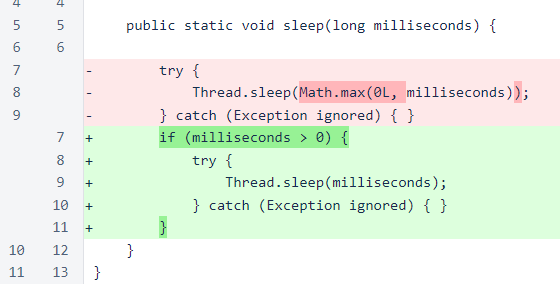For monitoring data that led to most of the changes in this version, ∩30,000 was awarded to 0a05...01ed. This bounty will be deducted from the funds held by the Nyzo team, and it will not affect the amount of funds that will be transferred to the cycle account.